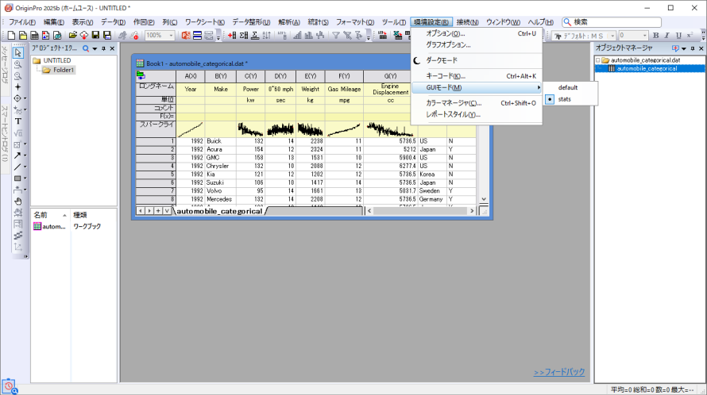

統計モード
Stats-Mode
統計モードとは？
Origin 2025bから統計モードが導入されました。このモードでは、統計解析に集中しやすくするために、グラフツールバーの多くのボタンや高度な解析ツールを非表示にし、インターフェースをすっきりさせています。これにより、目的の統計ツールが見つけやすくなります。また、DOE（実験計画法）などの人気のある統計用アプリがあらかじめインストールされています。 
統計モードでは、基本的なメニューやボタンのみが表示されるため、インターフェース上でツールが見つからない場合は、検索ボックスを使ってツール名を入力し、実行してください。

統計モードでOriginを開くには？
- Origin をインストールする際に、「統計用Originのインストール」 のページで「統計アプリ」と「統計モード」の両方にチェックを入れることで、統計モード付きでインストールできます。

完了すると、デフォルトでOriginは統計モードで起動されます。
Note: Originのインストール手順については、このページを参照してください。
- 統計用Originのインストールのページに気付かずにOriginをインストールした場合は、メニューから統計モードにいつでも切り替えできます。
環境設定: モード: 統計メニューを選択
この場合、必要な統計アプリを手動でインストールする必要があることに注意してください。
統計モードをオフにするには？
いつでも従来のインターフェースに戻すことが可能です。
- メニューから環境設定：モード：デフォルトを選択します。